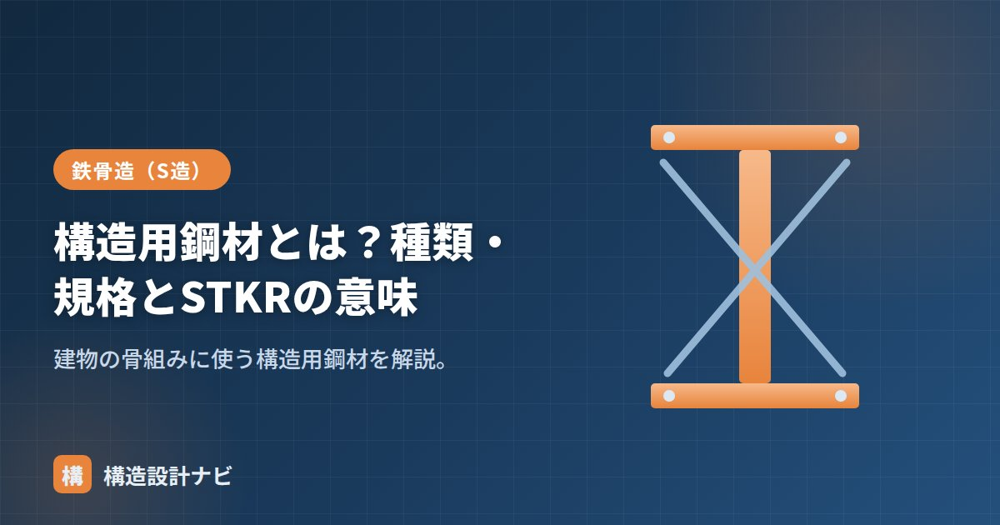

構造用鋼材とは？種類・規格とSTKRの意味

構造用鋼材とは、建物の骨組み（柱・梁・ブレースなど）を構成する、力を負担する鋼材のことです。英語では structural steel と呼ばれます。鉄骨造では用途に応じて板状の鋼材から作る形鋼（H形鋼・溝形鋼など）や、パイプ状の鋼管が使い分けられます。鋼材は工場で品質が均質に管理されるため、木材やコンクリートに比べて強度のばらつきが小さく、大スパンや高層の建物を実現しやすい材料です。
- 構造用鋼材はSS・SN・SMなどの形鋼とSTK・STKR・BCR/BCPなどの鋼管に大別される。
- STKRは「一般構造用角形鋼管」を表す記号。柱に使われる角形鋼管の一種。
- 主要なラーメン構造の柱には、設計ルールが整ったBCR・BCPが選ばれることが多い。
構造用鋼材の主な規格
| 記号 | 規格番号 | 名称 |
|---|---|---|
| SS400 | JIS G 3101 | 一般構造用圧延鋼材 |
| SM400〜570 | JIS G 3106 | 溶接構造用圧延鋼材 |
| SN400・SN490 | JIS G 3136 | 建築構造用圧延鋼材 |
| STK | JIS G 3444 | 一般構造用炭素鋼鋼管（円形） |
| STKR | JIS G 3466 | 一般構造用角形鋼管 |
| BCR・BCP | 大臣認定等 | 冷間成形角形鋼管 |
板から作る形鋼（H形鋼・溝形鋼・山形鋼など）はSS・SN・SMが、鋼管はSTK・STKR・BCR・BCPが使われます。記号のうち数字（SS400・SN490など）は、その鋼材の引張強さや降伏点のおおよその区分を表しており、数字が大きいほど強度が高い鋼種です。同じ断面でも高い強度の鋼種を使えば、部材を細くしたり本数を減らしたりできますが、コストや溶接性とのバランスも考える必要があります。
STKRの意味
STKRは「一般構造用角形鋼管」を表す記号です。S＝Steel、T＝Tube（管）、K＝一般構造用、R＝Rectangular（角形）に由来します。柱に使われる角形鋼管（コラム）の一種で、STKR400・STKR490があります。角形鋼管は円形の鋼管（STK）に比べて、梁との接合部の加工がしやすく、柱・梁を直交させるラーメン構造との相性がよいため、鉄骨造の柱に広く使われています。
STKRとBCR・BCPの違い
| STKR | BCR・BCP | |
|---|---|---|
| 位置づけ | 一般構造用角形鋼管（JIS） | 建築用に整備された冷間成形角形鋼管 |
| 主な用途 | 小規模・二次的な部材など | ラーメン構造の柱（主要部材） |
| 地震時の扱い | 変形性能の保証が限定的 | 応力割増し等のルールが整備 |
主要なラーメン構造の柱には、設計ルールが整ったBCR・BCPが選ばれることが多く、STKRは規模や役割を見て使い分けます。BCR・BCPは、冷間成形（常温で曲げ加工する製法）によって角形鋼管を作る際に生じる強度の割増しや変形性能を考慮した設計ルール（応力割増し等）が整備されているのに対し、STKRは一般構造用として汎用的に使われる規格で、地震時の粘り強さの保証が限定的とされています。
鋼材の選び方
実務では、部材の役割（柱か梁か、主架構か二次部材か）、必要な断面性能、コスト、溶接や接合のしやすさを総合的に見て鋼材を選びます。たとえば小規模な倉庫の二次部材にはSTKRやSS400を、中高層のラーメン構造の主要な柱にはBCR295・BCP235などを採用するといった具合です。同じ形状でも規格が異なると許容応力度や入手性が変わるため、構造図面には必ず使用する鋼材の記号（例：STKR490、BCP325）を明記します。
鋼材の記号は「鋼材の種類（SS・SN・SM）」、角形鋼管は「冷間成形角形鋼管マニュアル」、規格全体は「JIS鋼材一覧」をどうぞ。
鉄骨図をチェックしていると、主要な柱にSTKRが指定されたまま応力割増しの検討が抜けていることがあります。BCR・BCPへの変更で済む場合もあるので、記号だけを見て流さず、その部材がラーメン構造の主要な柱かどうかを必ず確認しています。
まとめ
- 構造用鋼材は骨組みで力を負担する鋼材。形鋼はSS・SN・SM、鋼管はSTK・STKR・BCR/BCP。
- STKRは「一般構造用角形鋼管」。STKR400・STKR490がある。
- 主要な柱にはBCR・BCPが使われることが多く、STKRと使い分ける。
- 部材の役割・コスト・接合のしやすさを踏まえて鋼種を選定する。